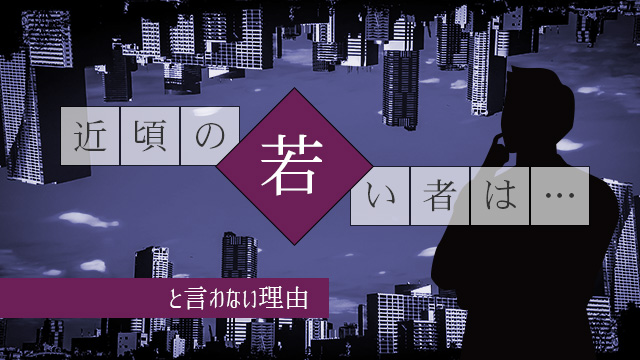

若者気質は次の時代の先取り
「近頃の若い者は…」という常套句があります。
一説によると数千年前の古代アッシリアの石碑にもこの言葉が書かれてあるとか。（実際はウソらしいが）
まあ、それくらい昔から年長者は若者を評するときこの言葉を使って来たのでしょう。
「近頃の若者は」という言葉を使うとき、その後に必ずネガティブな内容すなわち苦言が続くわけですね。
「…ったく近頃の若い者は礼儀をわきまえない」
「近頃の若い者は○○ばかりやってケシからん」
などなど。
その裏には「昔は良かった」という年長者の思いがあります。
ところで私はこの「近頃の若者は」という言葉が大嫌いで、自分だけは年をとっても絶対言うまいと固く心に誓って来ました。
なぜなら私自身若い頃この言葉をいつも言われていたからです（笑）。
高校生の頃私たちは世間から「最近の高校生は無気力でなってない！」と散々言われたものです。
死語ですが三無主義（なつかしい！）などという言葉もありました。三無主義とは「無気力」「無責任」「無関心」のことで、私たち若者を揶揄する当時のマスコミ用語です。
個人的にも大学生の頃、下宿の部屋を汚したと言って家主から「全く近頃の若い者は」と叱られ、学生運動のマネごとをして機動隊に連行される時には、取り囲む群衆の中から「最近の若いヤツらは何考えてんだ！」とヤジられ、また免許取り立ての頃スーパーの駐車場で他の車に接触し、その車から降りてきたオバさんからは「ホント、近頃の若い人はなってないんだから 」と説教されたりしたものです。
まあ、単に私の行動がアホだったからですが、それにしても何でもかんでも「近頃の若いモンはケシからん」という論法で攻めたててくる当時の年長者に、私は割り切れない悔しさを感じたのは確かです。
だから私は自分が年をとっても「近頃の若者は」だけは絶対言うまいと思ったわけです。
たまたま私はその後、塾の経営という仕事をやる性質上、若い人たちとばかり接触することになり、以来数十年が過ぎました。
この間生徒も含め大学生や20代のスタッフなど私と過ごした人たちは数千人にのぼります。
何しろスタートから私より年上はほぼいないという状態で還暦に至る現在まで私の周囲には若者ばかりなのです。
そういう意味で私は筋金入りの若者ウオッチャーと言えます!!
おかげで若者像の変遷を目の当りにしてきたわけで、私自身が若者を通しての時代の移り変わりを肌で感じることができました。
その結果言えることは
若者の気質はその時々で変化するが、その変化は必ず次の時代の先取りである
ということです。
だから若者の現象面における変化をよく観察すれば、その底流にある次の時代の傾向を予測することができるということです。
先ほどまで私は散々「近頃の若者は」という言葉を絶対に言わないと表明してきました。
それは老人の繰り言だからです。時代の変化についていけない年長者が、若者に脅威を感じ、自らの個人的不満や不安を「ダメな若者」と見下すことでウサ晴らしをする精神構造に嫌悪感を持ち続けてきたからです。
昔は良かった式の、現在の自分への不満を時代や他者のせいにする自己欺瞞の態度がイヤだったからです。
しかし近頃の若者を冷静に観察しそこから新しい時代の息吹を感じることは、私に知的好奇心を呼び覚まします。
またそれは今必要なことのように思えます。
今の若者は礼儀正しい
ということで、今の若者たちの良いところを簡単に述べてみます。
たとえば礼儀正しい人が増えた。
一昔前は若者といえば、礼儀知らずのボウジャク者というのがふつうでした。
ところがそういう常識知らずで無礼な若者というのは最近めっきり減った気がします。
大体皆きちんとしていてあまり逸脱しない。
小中学生もそうで、一昔前までと全然印象が違います。反抗的で暴力的な子というのは今では絶滅種(笑)に近い。（もちろんそういう粗暴な子も一部いるが、数は極端に少ない）
全体に素直になった。大人しくなった。常識的になったということです。
むろんこれについては良い面ばかりではありません。いつの時代でも若者は社会の矛盾や不正に敏感で最初に声を上げ立ち上がり、そうして社会自らも改革され前進していくのが常でした。
そういう観点からすると、今の若者たちに物足りなさや歯がゆさを感じる人も多いでしょうし、何よりも次代を担う若い人たちが「そんなエネルギー不足で大丈夫か！」と批判する人もいるでしょう。
しかし私は、今の若者たちが「エネルギー不足」だとは必ずしも思っていない。見かけ上は大人しく素直ですが、それは昔の若者のようにエネルギーを反抗とか破壊のように分かりやすい「形」として表さないだけで、内に秘めた情熱それ自体は昔と何ら変わっていないと信じます。
実際一緒に行動しているとそういう場面に何度も出くわすからです。
例えば仕事などでも、十分にその意義や目的を説明した上で自分の仕事の価値を自覚したときは、彼らの行動は非常に高い質をともなうことが多いのです。
自覚したら責任をもち、時には損得計算抜きで集中し成し遂げることができる。
この「自覚」「責任」「損得を計算しない」という3点においては、私たち世代やバブル世代の若者よりもはるかに優れている。
私はそう感じます。
ただ、その前提として、年輩者―会社の上司や学校の先生など―が彼らに十分な自信を与えておくこと。そのためには大人たちが、彼ら若者たち一人ひとりにその能力や長所を認め気づかせる努力が必要です。
その上で彼らの信頼を得ることができれば、若者たちは自信を持って誠実に行動するでしょう。
そういう意味で、私たち大人の役割も大きいと感じています。
私がいつも子を持つ親の皆さんに「子どもを肯定的に見る事の大切さ」を説いているのも、実は今の時代の若者気質にそれが適合的な育て方だと思うからなのです。
欠点を指摘しながら、あるいは弱点やミスを攻撃しながら人を育てるというやり方はもはや通用しなくなりました。
教育法そのものも大きく変えていく必要があると感じる今日この頃です。
若者論についてはまだまだ話したいのですがまた別の機会に改めます。